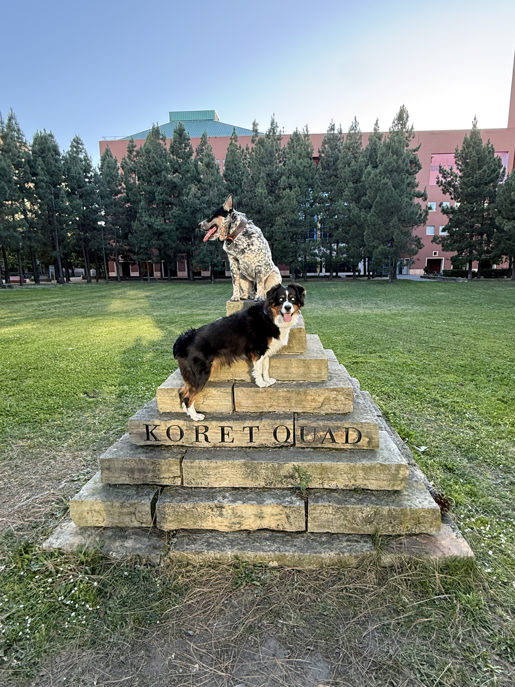

kevin a. scott
co-founder and director of discovery chemistry at stealth medicines, working at the intersection of computational drug discovery, chemical biology, and AI-driven protein dynamics.
my work focuses on targeting dynamic proteins — cryptic pockets, allosteric sites, and protein-protein interaction interfaces — using covalent chemoproteomic platforms and AI-guided molecular design.
when not in the lab, i'm out in san francisco with my dogs kaos and entropie.

info
research interests
tools & platforms
chemical space surveyor
cysteine-reactive covalent probe platform mapping the epiproteome via isoTOP-ABPP mass spectrometry, integrated with AlphaFold → docking → MD computational pipeline.
surveyor chemscape
interactive chemical space visualization tool for drug discovery. PCA, UMAP, and custom descriptor plotting across large molecular datasets.